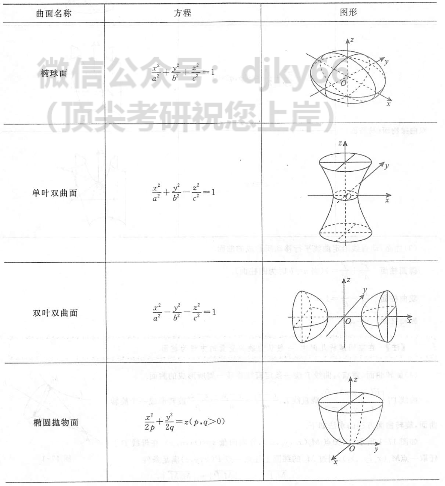
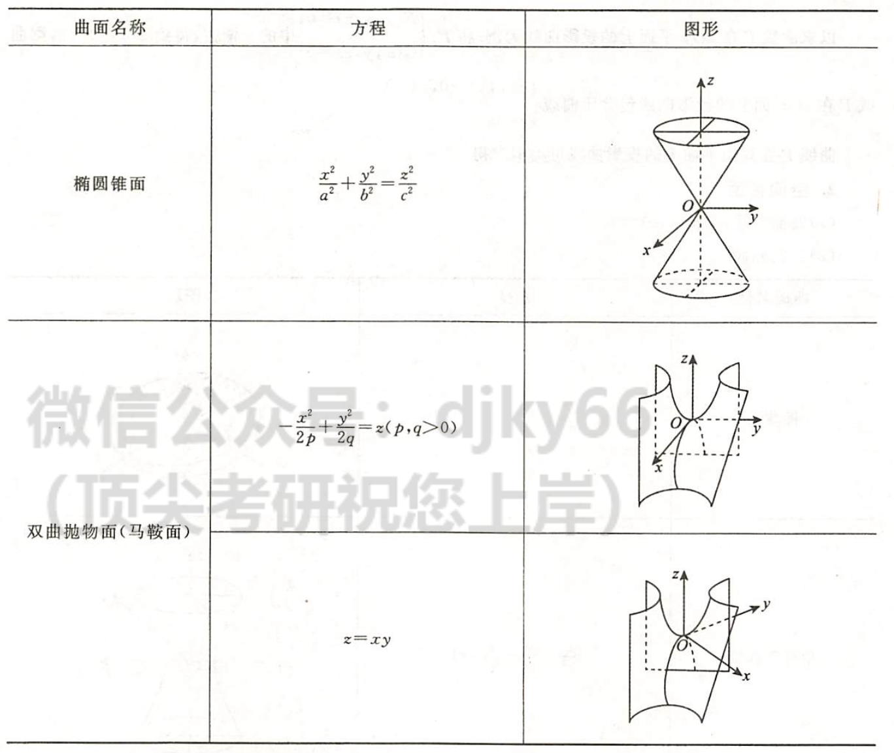

2022.07.02
数量积 $$ \boldsymbol{a}\cdot \boldsymbol{b} = (a_1,a_2,a_3)\cdot (b_1,b_2,b_3) = a_1b_1+a_2b_2+a_3b_3\ \boldsymbol{a}\cdot \boldsymbol{b} = |\boldsymbol{a}||\boldsymbol{b}|\cdot \cos\theta\to\cos\theta=\frac{\boldsymbol{a}\cdot\boldsymbol{b}}{|\boldsymbol{a}||\boldsymbol{b}|}=\frac{a_1b_1+a_2b_2+a_3b_3}{\sqrt{a_1^2+a_2^2+a_3^2}\cdot\sqrt{b_1^2+b_2^2+b_3^2}}\ \boldsymbol{a}\perp\boldsymbol{b} \Leftrightarrow |\boldsymbol{a}||\boldsymbol{b}|\cdot \cos\theta=0 \Leftrightarrow \theta=\frac{\pi}{2}\ Prj_b\boldsymbol{a} = \frac{\boldsymbol{a}\cdot \boldsymbol{b}}{|\boldsymbol{a}|},a在b上的投影 $$
向量积 $$ \boldsymbol{a}\times \boldsymbol{b} = \begin{vmatrix} \boldsymbol{i} & \boldsymbol{j} & \boldsymbol{k} \ a_i & a_j & a_k\ b_i & b_j & b_k \end{vmatrix}\ |\boldsymbol{a}\times \boldsymbol{b}| = |\boldsymbol{a}|\cdot |\boldsymbol{b}|\cdot \sin\theta\ a\parallel b \Leftrightarrow \theta=0或\pi $$
混合积 $$ [\boldsymbol{abc}]=(\boldsymbol{a}\times\boldsymbol{b})\cdot \boldsymbol{c} = \begin{vmatrix} a_i & a_j & a_k\ b_i & b_j & b_k\ c_i & c_j & c_k \end{vmatrix} \ \begin{vmatrix} a_i & a_j & a_k\ b_i & b_j & b_k\ c_i & c_j & c_k \end{vmatrix}=0 \Leftrightarrow 三向量共面 $$
方向角和方向余弦：方向角—向量与x，y，z轴正向的夹角 $$ 方向余弦\ \cos \alpha = \frac{a_x}{|\boldsymbol{a}|}\ \cos \beta = \frac{a_x}{|\boldsymbol{a}|}\ \cos \gamma = \frac{a_x}{|\boldsymbol{a}|} \单位向量\ \boldsymbol{a_0}=\frac{\boldsymbol{a}}{|\boldsymbol{a}|}={(\cos \alpha,\cos \beta,\cos \gamma)}\ 任意向量\boldsymbol{r} = |\boldsymbol{r}|(\cos\alpha,\cos\beta,\cos\gamma) $$
平面方程 $$ 法向量:&\boldsymbol{n} = (A,B,C)\ 一般式:&Ax+By+Cz+D = 0\ 点法式:&A(x-x_0)+B(y-y_0)+C(z-z_0)=0\ 三点式:&\begin{vmatrix} x-x_1 & y-y_1 & z-z_1\ x-x_2 & y-y_2 & z-z_2\ x-x_3 & y-y_3 & z-z_3 \end{vmatrix}=0\ 截距式:&\frac{x}{a}+\frac{y}{b}+\frac{z}{c} =1 $$
直线方程 $$ 方向向量:&\tau = (l,m,n)\ 一般式:& \begin{cases} A_1x+B_1y+C_1z+D_1 = 0,\boldsymbol{n}_1=(A_1,B_1,C_1)\ A_2x+B_2y+C_2z+D_2 = 0,\boldsymbol{n}_1=(A_2,B_2,C_2)\ \end{cases} (n_1不平行于n_2)\ 点向式:&\frac{x-x_0}{l}=\frac{y-y_0}{m}=\frac{z-z_0}{n}\ 参数式:&\begin{cases} x = x_0+lt\ y = y_0+mt\ z = z_0+nt \end{cases}\ 两点式:&\frac{x-x_1}{x_0-x_1}=\frac{y-y_1}{y_0-y_1}=\frac{z-z_1}{z_0-z_1} $$
位置关系 $$ P(x_0,y_0,z_0)到Ax+By+Cz+D=0距离:&\frac{|Ax_0+By_0+Cz_0+D|}{\sqrt{A^2+B^2+C^2}}\ 直线垂直:&方向向量内积为0\ 直线平行:&方向向量分量成比例\ 平面垂直:&法向量垂直\ 平面平行:&法向量平行\ $$
空间曲线 $$ 一般式:&\begin{cases} F(x,y,z)=0\ G(x,y,z)=0 \end{cases}\ 参数式:&\begin{cases} x=\phi_1(t)\ y=\phi_2(t)\ z=\phi_3(t) \end{cases}\ 空间曲线在坐标面上的投影:&如果投影到XOY平面\ &消去\begin{cases} F(x,y,z)=0\ G(x,y,z)=0 \end{cases}中的z,\ &得到\phi(x,y)=0\ &投影为：\begin{cases} \phi(x,y)=0\ z=0 \end{cases} $$
空间曲面


柱面 $$ 椭圆柱面:&\frac{x^2}{a^2}+\frac{y^2}{b^2}=1\ 双曲柱面:&\frac{x^2}{a^2}-\frac{y^2}{b^2}=1\ 抛物柱面:&y=ax^2 $$
旋转曲面 $$ 曲线\tau：&\begin{cases} F(x,y,z)=0\ G(x,y,z)=0 \end{cases}\ 绕直线：&\frac{x-x_0}{l}=\frac{y-y_0}{m}=\frac{z-z_0}{n}\ 原材料:&\begin{cases} 直线上一点:P_0(x_0,y_0,z_0)\ 曲线上一点:P_1(x_1,y_1,z_1)\ 纬圆上一点:P(x,y,z)\ 直线方向向量:(l,m,n) \end{cases}\ 旋转一周所组成的曲面:&\begin{cases} 【PP_1与直线垂直】\ l(x-x_1)+m(y-y_1)+n(z-z_1)=0\ 【|P_1P_0|=|PP_0|】\ (x-x_0)^2+(y-y_0)^2+(z-z_0)^2=(x_1-x_0)^2+(y_1-y_0)^2+(z_1-z_0)^2\ 【P_1在曲线上】\ F(x_1,y_1,z_1)=0\ G(x_1,y_1,z_1)=0 \end{cases} $$
$$ 空间曲线:&\begin{cases} F(x,y,z)=0\ G(x,y,z)=0 \end{cases}\ P_0处切向量:&\tau=( \begin{vmatrix} F_y & F_z\ G_y & G_z \end{vmatrix}{P_0}, \begin{vmatrix} F_z & F_x\ G_z & G_x \end{vmatrix}, \begin{vmatrix} F_x & F_y\ G_x & G_y \end{vmatrix}{P_0})\ P_0点线:&\frac{x-x_0}{\begin{vmatrix} F_y & F_z\ G_y & G_z \end{vmatrix}= \frac{y-y_0}{ \begin{vmatrix} F_z & F_x\ G_z & G_x \end{vmatrix}}{P_0}}= \frac{z-z_0}{ \begin{vmatrix} F_x & F_y\ G_x & G_y \end{vmatrix}\ P_0切平面:&(x-x_0){\begin{vmatrix} F_y & F_z\ G_y & G_z \end{vmatrix}}{P_0}}+ (y-y_0){ \begin{vmatrix} F_z & F_x\ G_z & G_x \end{vmatrix}+ (z-z_0){ \begin{vmatrix} F_x & F_y\ G_x & G_y \end{vmatrix}_{P_0}}=0 $$}
$$ 空间曲面:z=f(x,y)\to F(x,y,z)=f(x,y)-z $$
方向导数 $$ \begin{align} 定义法\ P(x,y,z)&=\begin{cases} x-x_0=\Delta x=t\cdot \cos \alpha\ y-y_0=\Delta y=t\cdot \cos \beta\ z-z_0=\Delta z=t\cdot \cos \gamma \end{cases}\ t&=\sqrt{(\Delta x)^2+(\Delta y)^2+(\Delta z)^2}\ \lim_{x\to 0^+}\frac{u(P)-u(P_0)}{t} &=\lim_{x\to 0^+}\frac{u(x_0+t\cdot \cos \alpha,y_0+t\cdot \cos \beta,z_0+t\cdot \cos \gamma)-u(x_0,y_0,z_0)}{\sqrt{(\Delta x)^2+(\Delta y)^2+(\Delta z)^2}}\ &=u'_x(P_0)\cos\alpha+u'_y(P_0)\cos\beta+u'_z(P_0)\cos\gamma \end{align} $$
梯度 $$ \begin{align} &[u'x(P_0)\cos\alpha+u'_y(P_0)\cos\beta+u'_z(P_0)\cos\gamma]\ =&[u'x(P_0),u'_y(P_0),u'_z(P_0)]\cdot[\cos\alpha,\cos\beta,\cos\gamma]\ =&[u'_x(P_0),u'_y(P_0),u'_z(P_0)]\cdot[1,1,1]\ \to&梯度方向,方向导数取的最大值 \end{align} $$
散度 $$ A(x,y,z) = (P(x,y,z),Q(x,y,z),R(x,y,z))\ div A = \frac{\partial P}{\partial x}+ \frac{\partial Q}{\partial y}+ \frac{\partial R}{\partial z}\ $$
旋度 $$ A(x,y,z) = (P(x,y,z),Q(x,y,z),R(x,y,z))\ rot A=\begin{vmatrix} i & j & k\ \frac{\partial}{\partial x} & \frac{\partial}{\partial y}&\frac{\partial z}{\partial}\ P&Q&R \end{vmatrix} $$